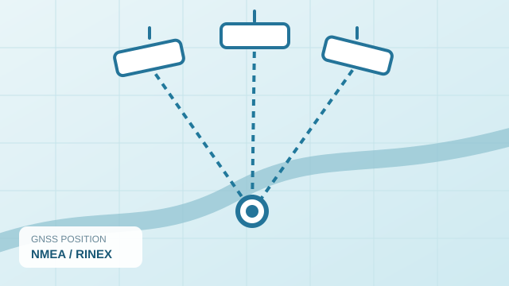
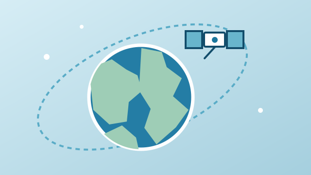

GNSS · PYTHON
GNSS NMEA Parser
A desktop application for parsing NMEA messages, exporting GPS data to CSV and viewing locations on a map.
View on GitHub ↗Selected projects in GNSS, satellite imagery and geospatial software.

A desktop application for parsing NMEA messages, exporting GPS data to CSV and viewing locations on a map.
View on GitHub ↗Satellite imagery cloud detection using image processing and deep learning.
View on GitHub ↗A 3D geospatial simulation with radar, orbital visualization and air-defense concepts.
View on GitHub ↗
Satellite pass predictions and ground-station tools using orbital calculations.
View on GitHub ↗A quick comparison of the selected projects.
| Image | Project | Technologies | Purpose |
|---|---|---|---|
| GNSS NMEA Parser | Python, PyQt5, Folium | GPS data parsing and map visualization | |
| Nimbus-Edge | Python, PyTorch, Rasterio | Cloud detection in satellite imagery | |
| Aegis | JavaScript, CesiumJS | 3D spatial simulation | |
| Sat-Track | Python, Skyfield, SGP4 | Satellite pass prediction and tracking |
Project illustrations are schematic and do not represent actual application screenshots.